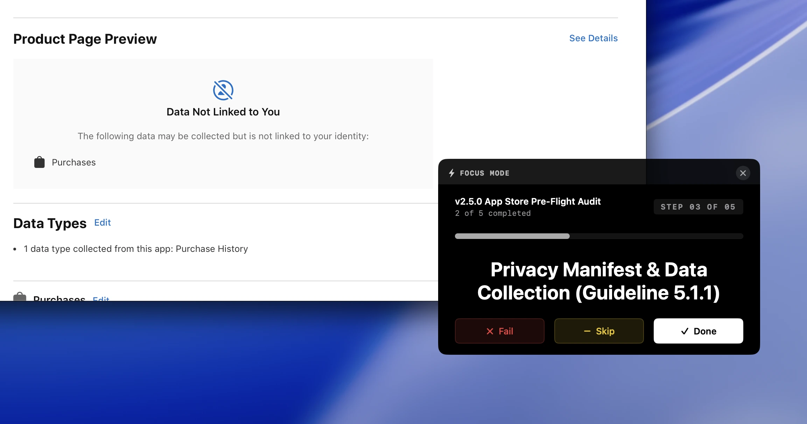
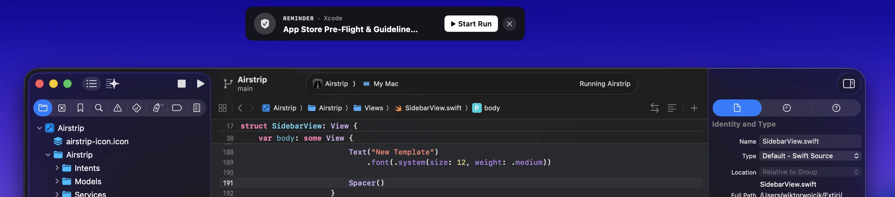
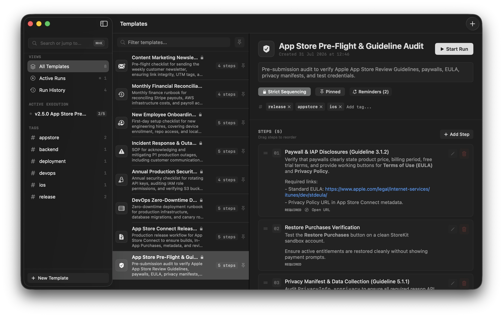
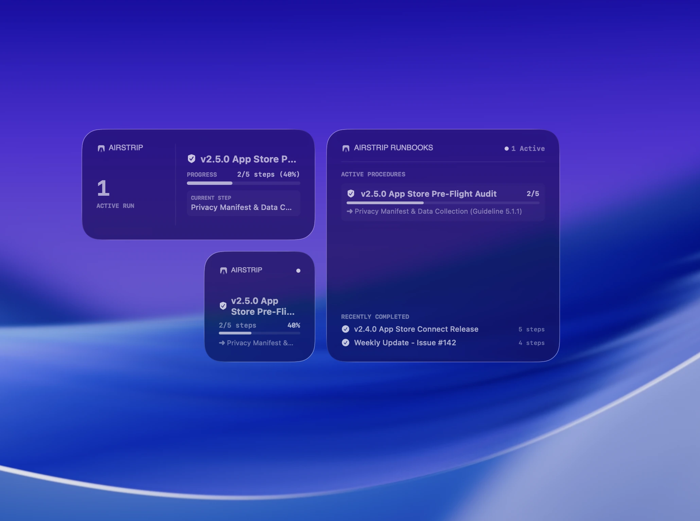
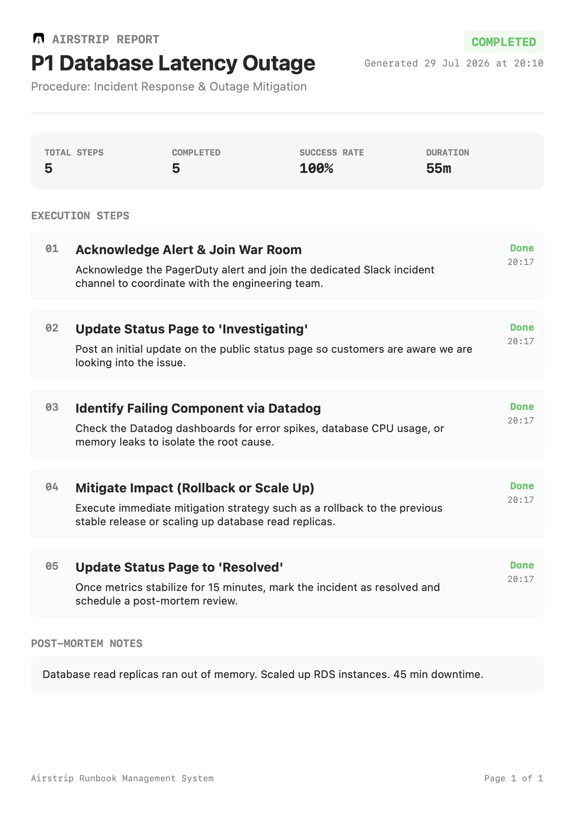

Execute procedures with surgical precision.
Transform static release notes, server deployments, and ops checklists into interactive workflows that trigger right when and where you need them on macOS.

Blueprints & Executions. Built to never break history.
Traditional documentation gets overwritten. Airstrip separates the template blueprint from execution history, ensuring past runbooks stay 100% immutable.
Master Templates
Define master blueprints with sequential or non-sequential steps, estimated durations, and markdown instructions.
Deep Copy Runs
Instantiating a procedure copies all steps into a standalone run history. Modifying the template later never alters past run records.
Dynamic Variables
Inject dynamic variables like {{version}} or {{environment}} at launch time for
tailored execution blocks.
Actions attached right to the step.
Don't context-switch between terminal tabs and documentation. Execute actions directly from your checklist.
Focus Mode floating overlay.
Step out of the main window. Focus Mode renders a compact, borderless floating window on top of Xcode, VS Code, or your terminal window.

The right runbook, right on cue.
Airstrip actively monitors focused applications and active web domains to recommend appropriate procedures automatically.

Tags, search & template variables.
Keep dozens of procedures categorized with custom tags, quick search, and pinned favorites in a clean sidebar interface.

Model Context Protocol (MCP) integration.
Give AI agents direct access to your runbook procedures. With native MCP support, AI coding assistants can query Airstrip templates and execute strict, repeatable SOPs without missing a step.
Starting Production Release runbook in Airstrip. Executing strict procedure steps.
Widgets & MenuBar integration.
Access pinned templates instantly from your Mac menu bar or desktop widgets for effortless execution.

Post-mortem notes & PDF generation.
Document critical reflections upon completing a runbook and generate audit-ready PDF or Markdown reports complete with step duration logs and timestamps.

Everything you need to know.
Is there a free trial?
Yes, Airstrip is available on the Mac App Store with a 14-day free trial. You can test all SOP and runbook management features before deciding on a subscription or purchase.
What makes Airstrip different from standard document tools?
Standard docs get overwritten. Airstrip creates a deep-copy execution snapshot for every run, keeping precise timestamps, step notes, and post-mortem logs without breaking historical records.
How do Context Observers work on Mac?
Airstrip uses automatic Mac system observers to detect active application focus and browser domains. When a matching app or site is focused, Airstrip presents a discreet recommendation banner.
Does Airstrip support iCloud Sync?
Yes. Built for macOS, all your templates, active runs, and contextual triggers automatically sync across your devices via iCloud.
Can I export completed runs for audits?
Absolutely. Completed runs generate downloadable PDF and Markdown reports including duration metrics, individual step timestamps, and post-mortem notes.
Ready to clear the runway?
Join developers, DevOps engineers, and creators who ship faster with interactive SOPs on Mac.